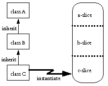

| |
Inheritance
as a |
||||||
Unlike many object-oriented languages, E has no primitive notion of inheritance. However, E's support for message delegation allows us to build inheritance as a pattern of message passing.

In classic inheritance, as found in Java, Smalltalk, and the single-inheritance subset of C++ (***what about Perl & Python?), an object is an instance of a class, while a class is a subclass of a parent class, which in turn is a subclass... on up to a root class. The resulting object contains state (instance variables) and behavior (methods) according to all the classes in this ancestry chain.
Here's how class B may appear in Java:
public class B extends A {
# private b-slice instance variable
private int myFoo;
# initialize b-slice
public B(String str, int foo) {
# initialize a-slice
super(str);
myFoo = foo;
}
# non-final, may be overridden
public int getFoo() { return myFoo; }
# overrides, but wraps, a-slice's getBar()
public int getBar() {
return super.getBar() + this.getFoo();
}
}
getBar(), by calling this.getFoo() rather than using myFoo, is enabling the Foo-providing part of its behavior to be changed by a subclass. However, it isn't requiring this -- if the subclass doesn't override, the b-slice has an adequate implementation of this behavior. One can think of class B as providing an open implementation. An open implementation exposes some of its internal logic, and invites subclasses to build alternate implementations by overriding particular pieces.
Such subclassing requires a more intimate understanding of the internal logic of the superclass than does being a client of an object -- for example, to know the effects of overriding getFoo(), a subclass would have to know whether getBar() uses getFoo() or myFoo.
Mixing state and behavior from separately written (and possibly mutually suspicious) modules within one object is confusing. Object programming enables us to think about modularity precisely when abstraction boundaries coincide with object boundaries. In capability programming, this is even more true. However, the open implementation technique, though delicate, is useful. Can we have this layer cake and digest it as well?
A Pattern of Static Delegation

The obvious answer is the correct one -- just make each slice into a separate object. super is then simply an instance variable each slice (except the top one) uses to point at the slice above it. self is simply an instance variable that all slices use to point at the bottom slice. ("self" plays the role of "this" in Java or C++.) Outside the slice-tower, others point only at the bottom slice, cSlice, and send messages to it as if it were the object as a whole. Each object in the tower delegates messages it doesn't understand to the object above it -- its super. Using these principles, we can get the effect of the previous Java code in E as follows:
def makeB {
# only needed if, in Java terms, B is non-abstract
to new(str, foo) :any {
def self := makeB.adopt(self, str, foo)
}
# initialize b-slice
to adopt(self, str, foo) :any {
# initialize a-slice
def bSlice extends makeA.adopt(self, str) {
# you are invited to override
to getFoo() { foo }
# overrides, but wraps, a-slice's getBar
to getBar() {
return super.getBar() + self.getFoo()
}
}
}
}
We call this pattern static delegation to distinguish it from other patterns of inheritance by delegation [ref Treaty of Orlando, Lieberman, Vulcan, Self, Clarity]. In these other patterns, the super object is dynamically told which object to use as self during each act of delegation, allowing several different sub-objects to "inherit" from the same super object. This pattern can certainly be practiced by the E programmer, but it remains to be seen whether its power is worth its complexity.
The first part of the above code, shown in bold, is boilerplate that would need to be manually repeated whenever this inheritance pattern is used. Instead, we provide the class expression as shorthand for this boilerplate.
The class Expression
The "class" keyword is no longer supported, having been subsumed by the "extends" keyword. There "extends" keyword and its use for normal delegation will be explained here. This section on the "The class Expression" will be replaced with one showing how to use the "extends" keyword for inheritance-by-static-delegation, ie, as sugar for the above pattern.
Using the class expression, you can write makeB as
class makeB(str, foo) :any {
def super := makeA.adopt(self, str)
def bSlice {
to getFoo() { foo }
to getBar() {
super.getBar() + self.getFoo()
}
delegate { super }
}
}
This will expand to the previous, more explicit code shown above. class only helps define B so that it can be "subclassed" by C. B still manually does all the work needed to "subclass" A. If B doesn't need to be "subclass"ed, it needn't use class, even if it is "subclass"ing something else.
Unless stated otherwise, all text on this page which is either unattributed or by Mark S. Miller is hereby placed in the public domain.
| |
|
report bug (including invalid html)
|
||||||||